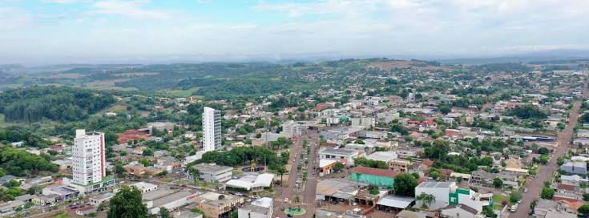

Sensor de "Cheiro" do Solo para Milho
Monitoramento precoce de estresse hídrico e saúde do solo via nariz eletrônico
SoilSniff é um nariz eletrônico de baixo custo desenvolvido para pequenos produtores de milho do sudoeste do Paraná. Ele é enterrado no solo, detecta compostos orgânicos voláteis (VOCs) liberados por micróbios e raízes, e indica a saúde do solo através de um LED colorido — sem necessidade de aplicativo, internet ou conhecimento técnico.
O projeto nasceu em resposta à seca que devastou a região em 2026, causando mais de R$ 69 milhões em perdas na cultura do milho. Com menos de R$ 180 em componentes, qualquer agricultor pode ter acesso a diagnóstico precoce do solo.
Protótipo por ~R$ 180. Meta de R$ 100 em escala.
Diagnóstico em menos de 2 minutos.
Sem app, sem internet, sem técnico especializado.
Código e hardware abertos para toda a comunidade.
O SoilSniff é instalado a 10–15 cm de profundidade, próximo às raízes do milho. Seus sensores captam gases do solo e o Arduino Nano processa os valores, acendendo o LED na cor correspondente:
Navegue pelas seções para conhecer todos os detalhes do SoilSniff:
A crise no campo e a motivação por trás do projeto.
Por que pequenos produtores perdem lavouras que poderiam ser salvas.
Como o nariz eletrônico funciona e o que ele detecta.
Componentes, esquema de ligação e encapsulamento.
Lógica de decisão que classifica o estado do solo.
Simule o diagnóstico ajustando os parâmetros dos sensores.
Ajude a melhorar o projeto — código, dados ou hardware.